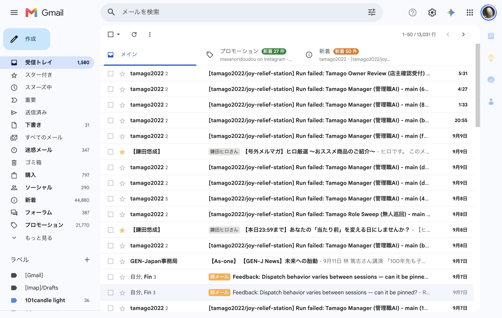

共有資料の一覧 ／ 確認ページ #704 ブラウザが画面中央に飛び出すのをやめる（最小化のまま裏で操作する）
#704 ブラウザが画面中央に飛び出すのをやめる（最小化のまま裏で操作する）
2026-09-10 実装・main合流・本番(GitHub Pages)反映まで実測確認
Chromeが最小化されているとclaude-in-chrome拡張のタブグループが壊れる不具合を確認。代わりに既存の「Lovable公開専用Chrome」(CDP 9223)へ新しいタブを1本だけ足す方式（生のCDP＝Chrome DevTools Protocol）に切り替えた。ウィンドウをminimized状態に明示的にしたままでもGmail受信トレイを開いて読め、操作前後でウィンドウの位置・状態が完全一致することを実機で確認した。再利用できる形で ~/.tamago/browser_peek.mjs にまとめ、失敗台帳(status/failures.md #22)にも手順を残した。
② 数字
0px操作前後のウィンドウ位置ズレ
1本新規に足したタブ数(使用後に閉じた)
0件新規に起動したChromeプロセス数
③ 実データでのスクリーンショット
実際に読めたGmail受信トレイ(ページ内スクリーンショット。OSの画面収録は使っていない)
④ 押せるリンク
⑤ 何をどう確かめたか
| 確認項目 | 結果 |
|---|
| 最小化(windowState:minimized)のままタブ追加→Gmail受信トレイのタイトル取得 | 成功(件名まで取得) |
| 操作前後でウィンドウのbounds(left/top/width/height/windowState)が一致 | 完全一致 |
| 既存タブ(Lovableエディタ)への影響 | 無し(前後とも1件のまま) |
| 新しいChromeプロセスの起動 | 無し(既存chrome-publishへ相乗りのみ) |
| 画面前面への表示(bringToFront/OSのactivate) | 一切呼んでいない |